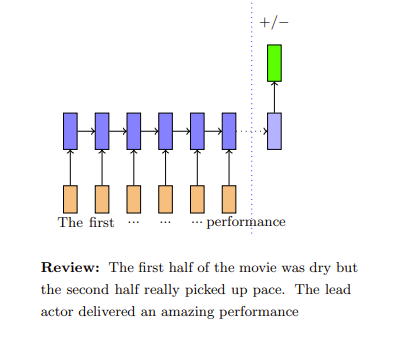
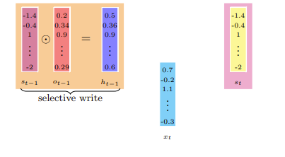
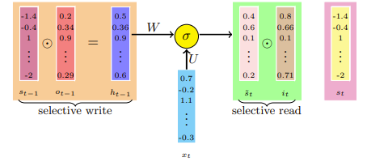
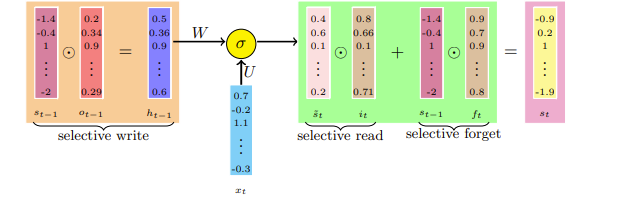
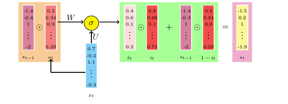
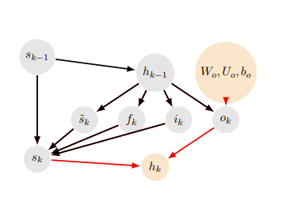

LSTMs and GRUs¶
约 4523 个字 6 张图片 预计阅读时间 15 分钟
Reference¶
- https://www.cse.iitm.ac.in/~miteshk/CS7015/Slides/Handout/Lecture15.pdf
1 选择性读取、选择性写入、选择性遗忘——白板类比¶
循环神经网络（RNN）的状态（\(s_{i}\)）记录了所有先前时间步的信息. 在每个新的时间步，旧信息会被当前输入改变. 可以想象，在\(t\)步之后，在时间步\(t - k\)（其中\(k < t\)）存储的信息会被完全改变，以至于无法提取在时间步\(t - k\)存储的原始信息.
类似的问题也会在信息反向传播时出现. 很难将时间步\(t\)产生的误差归因于时间步\(t - k\)发生的事件. 这种归因当然是以梯度的形式呈现的，我们在讨论梯度反向传播问题时研究过这个问题. 在讨论梯度消失时，我们对此进行了正式的论证.
让我们来看一个类比. 我们可以将状态视为一个固定大小的内存，将其与你用来记录信息的固定大小的白板进行比较. 在每个时间步（周期性间隔），我们在白板上写一些东西. 实际上，在每个时间步，我们都会改变截至该时间点记录的信息. 经过多个时间步后，就无法看出时间步\(t - k\)的信息是如何对时间步\(t\)的状态产生贡献的.
继续我们的白板类比，假设我们想在白板上推导一个表达式. 我们在每个时间步遵循以下策略：选择性地在白板上书写、选择性地读取已经写好的内容、选择性地忘记（擦除）内容. 让我们详细看看这些操作.
例如，计算 \(ac(bd + a)+ad\)，其中 \(a = 1\)，\(b = 3\)，\(c = 5\)，\(d = 11\). 假设“白板”一次只能写3个式子.
- 步骤1：写 \(ac = 5\)
- 步骤2：写 \(bd = 33\)
- 步骤3：写 \(bd + a = 34\)
- 步骤4：写 \(ac(bd + a)=170\)
- 步骤5：写 \(ad = 11\)
- 步骤6：写 \(ac(bd + a)+ad = 181\)
选择性写入¶
在推导过程中可能有很多步骤，但我们可能会跳过一些. 换句话说，我们选择要写的内容.
选择性读取¶
在写下一步时，我们通常会读取之前已经写好的一些步骤，然后决定下一步写什么. 例如，在步骤3中，步骤2的信息很重要. 换句话说，我们选择要读取的内容.
选择性遗忘¶
一旦白板写满了，我们就需要删除一些过时的信息. 但是我们如何决定删除哪些内容呢？我们通常会删除最没用的信息. 换句话说，我们选择要遗忘的内容.
还有很多其他场景可以说明选择性写入、读取和遗忘的必要性. 例如，我们可以把大脑想象成只能存储有限数量事实的器官. 在不同的时间步，我们有选择地读取、写入和遗忘一些事实. 由于RNN也有有限的状态大小，我们需要找到一种方法，让它能够选择性地读取、写入和遗忘.
2 长短期记忆（LSTM）和门控循环单元（GRU）¶
问题¶
我们能给出一个RNN也需要选择性读取、写入和遗忘的具体例子吗？我们如何将这种直觉转化为数学方程？
影评示例¶
影评：电影的前半部分很枯燥，但后半部分节奏明显加快. 主演的表演非常精彩.
考虑预测影评情感倾向（正面/负面）的任务. RNN从左到右读取文档，每读取一个单词就更新一次状态. 当我们读到文档末尾时，从开头几个单词获得的信息就完全丢失了. 理想情况下，我们希望：忘记停用词（如“a”“the”等）添加的信息；有选择地读取之前带有情感倾向的单词（如“awesome”“amazing”等）添加的信息；有选择地将当前单词的新信息写入状态.

请记住，蓝色向量（\(s_{t}\)）被称为RNN的状态. 它的大小是有限的（\(s_{t} \in \mathbb{R}^{n}\)），用于存储直到时间步 \(t\) 的所有信息. 这个状态类似于白板，迟早会过载，初始状态的信息会被改变得面目全非. 我们期望：通过选择性写入、读取和遗忘，确保这个有限大小的状态向量得到有效利用.
需要明确的是，我们在时间步 \(t - 1\) 计算出了状态 \(s_{t - 1}\)，现在我们想用新信息（\(x_{t}\)）对其进行更新，并计算新的状态（\(s_{t}\)）. 在这个过程中，我们要确保使用选择性写入、读取和遗忘，以便只有重要信息保留在\(s_{t}\)中. 现在我们来看看如何实现这些期望的功能.
选择性写入¶
回想一下，在RNN中，我们使用 \(s_{t - 1}\) 来计算 \(s_{t}\)，公式为 \(s_{t}=\sigma(W s_{t - 1}+U x_{t})\)（忽略偏置）. 但现在，我们不想将\(s_{t - 1}\)原封不动地传递到\(s_{t}\)，而是只想将其中的一部分传递（写入）到下一个状态. 在最严格的情况下，我们的决策可能是二元的（例如，保留第1个和第3个元素，删除其余元素）. 但更合理的做法是为每个元素分配一个0到1之间的值，以确定当前状态传递到下一个状态的比例.
我们引入一个向量 \(o_{t - 1}\)，它决定了 \(s_{t - 1}\) 的每个元素应该传递到下一个状态的比例. \(o_{t - 1}\) 的每个元素都与 \(s_{t - 1}\) 的对应元素相乘. \(o_{t - 1}\) 的每个元素都被限制在0到1之间.

但是我们如何计算 \(o_{t - 1}\) 呢？RNN如何知道应该传递多少比例的状态呢？
RNN必须与其他参数（\(W\)、\(U\)、\(V\)）一起学习 \(o_{t - 1}\). 我们通过以下公式计算 \(o_{t - 1}\) 和 \(h_{t - 1}\)：
参数 \(W_{o}\)、\(U_{o}\)、\(b_{o}\) 需要与现有的参数\(W\)、\(U\)、\(V\)一起学习. sigmoid（逻辑）函数确保值在0到1之间. \(o_{t}\)被称为输出门，因为它决定了传递（写入）到下一个时间步的信息量.
选择性读取¶
现在我们将使用 \(h_{t - 1}\) 来计算下一个时间步的新状态. 我们还将使用 \(x_{t}\)，它是时间步 \(t\) 的新输入.
注意，\(W\)、\(U\) 和 \(b\) 与我们在RNN中使用的参数类似（为简单起见，图中未显示偏置\(b\)）.
\(\tilde{s}_{t}\)捕获了来自上一个状态（\(h_{t - 1}\)）和当前输入\(x_{t}\)的所有信息. 然而，在构建新的单元状态\(s_{t}\)之前，我们可能不想使用所有这些新信息，而只想有选择地从中读取. 为了实现这一点，我们引入另一个门，称为输入门. \(\(i_{t}=\sigma\left(W_{i} h_{t - 1}+U_{i} x_{t}+b_{i}\right)\)\)
并使用\(i_{t} \odot \tilde{s_{t}}\)作为有选择地读取的状态信息.

到目前为止，我们有以下内容：
- 上一个状态：\(s_{t - 1}\)
- 输出门：\(o_{t - 1}=\sigma\left(W_{o} h_{t - 2}+U_{o} x_{t - 1}+b_{o}\right)\)
- 选择性写入：\(h_{t - 1}=o_{t - 1} \odot \sigma\left(s_{t - 1}\right)\)
- 当前（临时）状态：\(\tilde{s_{t}}=\sigma\left(W h_{t - 1}+U x_{t}+b\right)\)
- 输入门：\(i_{t}=\sigma\left(W_{i} h_{t - 1}+U_{i} x_{t}+b_{i}\right)\)
- 选择性读取：\(i_{t} \odot \tilde{s}_{t}\)
选择性遗忘¶
我们如何将 \(s_{t - 1}\) 和 \(\tilde{s_{t}}\) 结合起来得到新状态呢？这里有一种简单（但有效）的方法：
但我们可能不想使用整个 \(s_{t - 1}\)，而是想忘记其中的一些部分. 为了实现这一点，我们引入遗忘门.

现在我们得到了LSTM的完整方程组. 绿色框及其后的选择性写入操作展示了在时间步\(t\)发生的所有计算. - 门： \(\(o_{t}=\sigma\left(W_{o} h_{t - 1}+U_{o} x_{t}+b_{o}\right)\)\) \(\(i_{t}=\sigma\left(W_{i} h_{t - 1}+U_{i} x_{t}+b_{i}\right)\)\) \(\(f_{t}=\sigma\left(W_{f} h_{t - 1}+U_{f} x_{t}+b_{f}\right)\)\) - 状态： \(\(\tilde{s_{t}}=\sigma\left(W h_{t - 1}+U x_{t}+b\right)\)\) \(\(s_{t}=f_{t} \odot s_{t - 1}+i_{t} \odot \tilde{s_{t}}\)\) \(\(h_{t}=o_{t} \odot \sigma\left(s_{t}\right) \text{ 且 } rnn_{out }=h_{t}\)\)
LSTM有很多变体，包括不同数量的门以及不同的门排列方式. 我们刚刚看到的是最流行的LSTM变体之一. 另一个同样流行的LSTM变体是门控循环单元（GRU），我们接下来会介绍.
GRU的完整方程组¶

- 门： \(\(o_{t}=\sigma\left(W_{o} s_{t - 1}+U_{o} x_{t}+b_{o}\right)\)\) \(\(i_{t}=\sigma\left(W_{i} s_{t - 1}+U_{i} x_{t}+b_{i}\right)\)\)
- 状态： \(\(\tilde{s_{t}}=\sigma\left(W\left(o_{t} \odot s_{t - 1}\right)+U x_{t}+b\right)\)\) \(\(s_{t}=\left(1 - i_{t}\right) \odot s_{t - 1}+i_{t} \odot \tilde{s_{t}}\)\)
GRU没有显式的遗忘门（遗忘门和输入门是关联的）. 门直接依赖于\(s_{t - 1}\)，而不像LSTM那样依赖于中间的\(h_{t - 1}\).
3 LSTM如何避免梯度消失问题¶
直觉¶
在正向传播过程中，门控制着信息的流动. 它们防止任何无关信息写入状态. 同样，在反向传播过程中，门控制着梯度的流动. 很容易看出，在反向传播过程中，梯度会与门相乘.
如果时间步 \(t - 1\) 的状态对时间步\(t\)的状态贡献不大（即如果 \(\left\|f_{t}\right\| \to 0\) 且 \(\left\|o_{t - 1}\right\| \to 0\)），那么在反向传播过程中，流入 \(s_{t - 1}\) 的梯度会消失. 但这种梯度消失是可以接受的（因为 \(s_{t - 1}\) 对 \(s_{t}\) 没有贡献，我们不想让它为 \(s_{t}\) 的“错误”负责）. 与普通RNN的关键区别在于，信息和梯度的流动由门控制，这确保了梯度只在应该消失的时候消失（即当 \(s_{t - 1}\) 对 \(s_{t}\) 贡献不大时）.
现在我们来看一个关于门如何控制梯度流动的说明性证明.
回想一下，RNN中有一个乘法项会导致梯度消失. \(\(\frac{\partial \mathscr{L}_{t}(\theta)}{\partial W}=\frac{\partial \mathscr{L}_{t}(\theta)}{\partial s_{t}} \sum_{k = 1}^{t} \prod_{j = k}^{t - 1} \frac{\partial s_{j + 1}}{\partial s_{j}} \frac{\partial^{+} s_{k}}{\partial W}\)\)
特别是，如果\(\mathscr{L}_{4}(\theta)\)处的损失很高，是因为\(W\)不够好，无法正确计算\(s_{1}\)，那么这个信息不会通过梯度\(\frac{\partial \mathscr{L}_{t}(\theta)}{\partial W}\)传播回\(W\)，因为沿着这条长路径的梯度会消失.
一般来说，当从 \(\mathscr{L}_{t}(\theta)\) 到 \(\theta_{i}\) 的每一条路径上的梯度都消失时，\(\frac{\partial \mathscr{L}_{t}(\theta)}{\partial \theta_{i}}\) 的梯度就会消失. 另一方面，当至少有一条路径上的梯度爆炸时， \(\frac{\partial \mathscr{L}_{t}(\theta)}{\partial \theta_{i}}\) 的梯度就会爆炸. 我们首先要论证，在LSTM的情况下，至少存在一条路径，梯度可以有效地流动（因此不会出现梯度消失）.
我们从LSTM中不同变量的依赖图开始.

从时间步\(k - 1\)的状态开始：
为了简单起见，我们暂时省略参数，稍后再讨论它们.
从\(h_{k - 1}\)和\(s_{k - 1}\)出发，我们得到了\(h_{k}\)和\(s_{k}\). 这个递归过程将持续到最后一个时间步. 为了简单和便于说明，我们没有将参数（\(W\)、\(W_{o}\)、\(W_{i}\)、\(W_{f}\)、\(U\)、\(U_{o}\)、\(U_{i}\)、\(U_{f}\)）作为图中的单独节点，而是将它们放在了相应的边上. （我们只展示了一部分参数）
例如，我们想知道梯度是否通过 \(s_{k}\) 流向 \(W_{f}\). 换句话说，如果 \(\mathscr{L}_{t}(\theta)\) 很高是因为 \(W_{f}\) 未能为 \(s_{k}\) 计算出合适的值，那么这个信息应该通过梯度反馈到 \(W_{f}\). 我们也可以对其他参数（例如\(W_{i}\)、\(W_{o}\)、\(W\)等）提出类似的问题. LSTM是如何确保即使在任意时间步，这个梯度也不会消失的呢？让我们来看看.
要证明这一点，只需证明 \(\frac{\partial L_{t}(\theta)}{\partial s_{k}}\) 不会消失（因为如果这个不消失，我们就可以通过 \(s_{k}\) 到达 \(W_{f}\)）. 首先，我们观察到从 \(\mathscr{L}_{t}(\theta)\) 到 \(s_{k}\) 有多个路径（在反向传播时，只需将箭头方向反转）. 例如，有一条路径通过 \(s_{k + 1}\)，另一条通过 \(h_{k}\). 此外，到达 \(h_{k}\) 本身也有多个路径（从 \(h_{k}\) 的出边数量就可以明显看出）. 所以现在你只需相信从 \(\mathscr{L}_{t}(\theta)\) 到 \(s_{k}\) 有很多路径.
考虑其中一条路径（突出显示），它会对梯度产生贡献. 我们将这条路径上的梯度表示为 \(t_{0}\).
第一项 \(\frac{\partial \mathscr{L}_{t}(\theta)}{\partial h_{t}}\) 没问题，不会消失（\(h_{t}\)直接连接到\(\mathscr{L}_{t}(\theta)\)，没有中间节点会导致梯度消失）. 现在我们来看其他项 \(\frac{\partial h_t}{\partial s_t} \frac{\partial s_t}{\partial s_{t - 1}} \ (\forall t)\)
让我们先看 \(\frac{\partial h_{t}}{\partial s_{t}}\) . 回想一下， \(h_{t}=o_{t} \odot \sigma\left(s_{t}\right)\) . 注意， \(h_{t}\) 的第 \(i\) 个元素仅依赖于 \(o_{t}\) 和 \(s_{t}\) 的第 \(i\) 个元素，而不依赖于 \(o_{t}\) 和 \(s_{t}\) 的其他元素. 因此， \(\frac{\partial h_{t}}{\partial s_{t}}\) 将是一个 \(\in \mathbb{R}^{d×d}\) 的对角方阵，其对角线元素为 \(o_{t} \odot \sigma'(s_{t})\in \mathbb{R}^{d}\) （见第14讲的第35页幻灯片）. 我们用 \(D(o_{t} \odot \sigma'(s_{t}))\) 表示这个对角矩阵.
现在考虑 \(\frac{\partial s_{t}}{\partial s_{t - 1}}\) . 回想一下， \(s_{t}=f_{t} \odot s_{t - 1}+i_{t} \odot \tilde{s_{t}}\) . 注意， \(\tilde{s_{t}}\) 也依赖于 \(s_{t - 1}\) ，所以不能将其视为常数. 同样，我们处理的是一个有序网络，因此 \(\frac{\partial s_{t}}{\partial s_{t - 1}}\) 将是一个显式项和一个隐式项的和（见第14讲的第37页幻灯片）. 为简单起见，我们假设隐式项的梯度消失（我们假设这是最坏的情况 ）. 将 \(\tilde{s_{t}}\) 视为常数时，显式项的梯度由 \(D(f_{t})\) 给出.
现在回到 \(t_{0}\) 的完整表达式：
红色项不会消失，蓝色项包含遗忘门的乘积. 因此，遗忘门根据一个状态（ \(s_{t}\) ）对下一个状态 \(s_{t + 1}\) 的明确贡献来调节梯度流.
如果在正向传播中 \(s_{t}\) 对 \(s_{t + 1}\) 的贡献不大（因为 \(f_{t} \to 0\) ），那么在反向传播中，梯度也不会到达 \(s_{t}\) . 这是合理的，因为如果 \(s_{t}\) 对 \(s_{t + 1}\) 的贡献不大，那么在反向传播中就没有理由让它承担责任（ \(f_{t}\) 在正向传播和反向传播中起到相同的调节作用，这是合理的）. 因此，存在这样一条路径，当梯度不应该消失时，它不会消失. 正如所论证的，只要梯度通过其中一条路径（ \(t_{0}\) 通过 \(s_{k}\) ）反馈到 \(W_{f}\) ，我们就没问题！当然，梯度仅在需要时反馈，由 \(f_{i}\) 进行调节（但我最后再说一次，这是合理的）.
现在我们来看看为什么LSTM不能解决梯度爆炸的问题. 我们将展示一条梯度可能爆炸的路径. 让我们计算 \(\frac{\partial L_{t}(\theta)}{\partial h_{k - 1}}\) 中对应突出显示路径的一项（比如 \(t_{1}\) ）： $$\begin{align} t_{1}&=\frac{\partial \mathcal{L}{t}(\theta)}{\partial h)\ &=\mathcal{L}}}(\frac{\partial h_{t}}{\partial o_{t}} \frac{\partial o_{t}}{\partial h_{t - 1}})\cdots(\frac{\partial h_{k}}{\partial o_{k}} \frac{\partial o_{k}}{\partial h_{k - 1}{t}'(h) \end{align})(\mathcal{D}(\sigma(s_{t}) \odot o_{t}') \cdot W_{o})\cdots(\mathcal{D}(\sigma(s_{k}) \odot o_{k}') \cdot W_{o} $$
\(\left\| t_{1}\right\| \leq\left\| \mathcal{L}_{t}'(h_{t})\right\| (\| K\| \left\| W_{o}\right\| )^{t - k + 1}\)
根据矩阵 \(W_{o}\) 的范数，梯度 \(\frac{\partial L_{t}(\theta)}{\partial h_{k - 1}}\) 可能会爆炸. 类似地， \(W_{i}\) 、 \(W_{f}\) 和 \(W\) 也可能导致梯度爆炸.
那么我们如何处理梯度爆炸的问题呢？一种流行的技巧是使用梯度裁剪. 在反向传播过程中，如果梯度的范数超过某个值，就对其进行缩放，使其范数保持在可接受的阈值内. 本质上，我们保留梯度的方向，但缩小其范数.